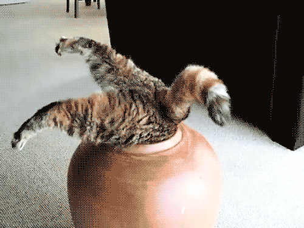

Bio Blurb
I was taken from a Maine Coon breeder in leganes by my owner and I now live happily in north Madrid. I am very proud of being
high up in the food chain and, although I've become a bit more lazy since I grew up I still carry the same determination everywhere I go. ps: I might have gotten a little fat since last time I checked
